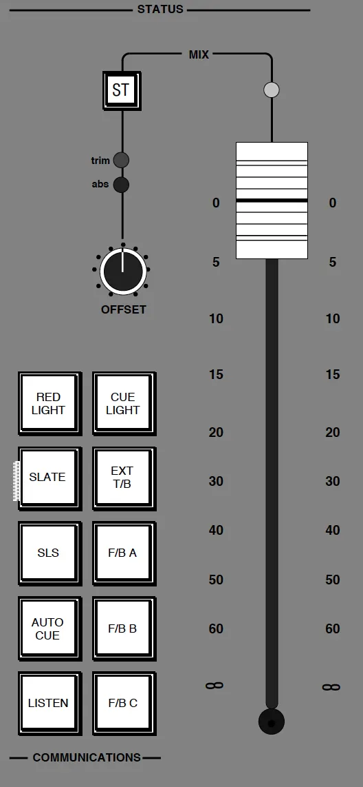
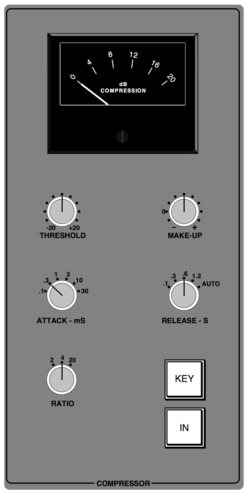
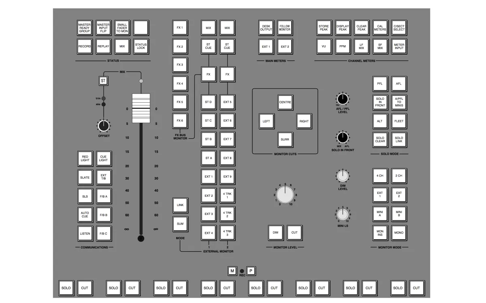
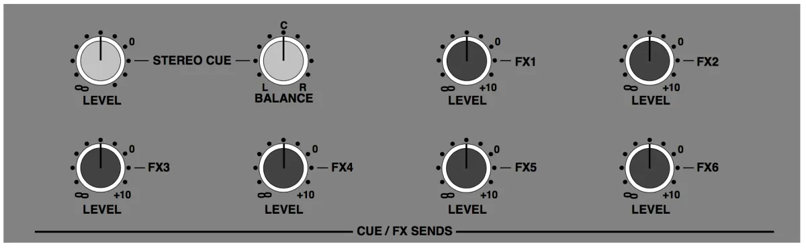
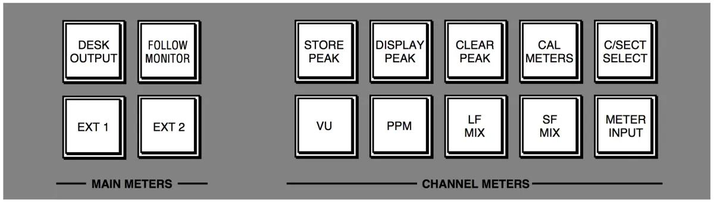
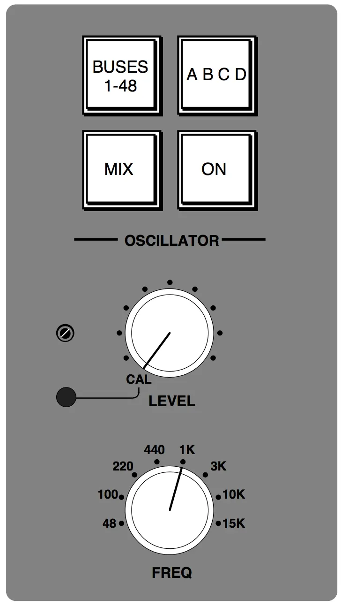

不知不覺的，我們也快要把硬體的操作講完了，不知道大家有沒有找台SSL來實際練練呢？
本篇內容重點在SSL9000J中央區塊的介紹，中央區塊就像控台的心臟一樣，所有在外流動的聲音最後都匯集在這裡，由上面不同功能的按鍵控制著進出控台的聲音。熟悉了前面介紹的各個模組路由和功能，坐在控台前卻還是一頭霧水嗎？相信這個中央區塊的導讀，能夠幫助各位，更自在的運用SSL控台。
The Console Centre Section

J系列控台的中央區塊安裝了兩個標準的區塊，其中一個寬八個模組，另一個寬十個模組(見上圖)
SL952/953J Master Facilities Module位於中央區塊的左邊，容納著主控邏輯(master logic)控制器, monitoring 和 metering 控制器, 輔助轉送(auxiliary send)和 echo返回主控return masters、 通訊機構(tracking/control room內外溝通用)、電源通道指
示和一個測試用震盪器.
八個master control group faders 位於 SL952J下方。J系列電腦的控制面板和彩色螢幕安裝在中央區塊的右方，控制面板下方有用來操作電腦螢幕上選單和功能的平板與觸控筆。平板下方抽屜有一台QWERTY鍵盤，更多細節在之後會再介紹。
The SL 952/953J Master Facilities Module
讀此章節時，建議搭配上方圖表進行。
Power Supply Indicators

從最上面看下來，會先看到六個LED燈，顯示著目前控台供電狀況。
48V供應幻象電源到Mic線上， 18V/ 22V雙級電源用來供應給Audio電路，5V則是供應邏輯電路。
±14V用來供應Fader馬達以及Meter燈號，雖然並沒有設計一個LED標示，但是如果Meter燈號沒亮，那也就表示±14V供電有問題了。
所有的LED燈都應該是亮的，如果有少的話 – 那就糟糕了，快打電話給原廠吧！
Status Buttons

這是一組非常重要的按鈕，位於SL952的左上方，它們控制著I/O模組的訊號通道路由。共有四種狀態可以選擇。這部分細節可以在第二章看到，在這裡也簡要的描述一下。
- RECORD – 這個狀態是為了將訊號錄進多軌機(Multitrack Machine)所設計的，他將所有的Input都切換到Mic in，同時也可將多軌機切換到同步回放模式(Sync Replay)(視控台設定)。Channel input經過Small faders到Multitrack Routing Matrix，再繼續走到多軌機。Large Faders 接收多軌返送(multitrack returns)和/或群組轉送(group sends) (視選擇GROUP 和/或TAPE按鈕) 最後將訊號送到主輸出匯流(main output busses)做為監聽訊號。
- REPLAY – 路由設定和RECORD一樣，不過可以把multitrack切換到一般回放(normalreplay)。所有的Large Fader inputs切換到TAPE，覆蓋過任何GROUP的選擇。這允許我們將錄好的軌道做快速的Monitor Mix，並從Main output輸出。
- MIX – 這個狀態可以把Multitrack切換到Replay。所有Channel inputs切換到Line input預備接收來自Multitrack returns的訊號，再將訊號送到Large Faders方便混音，最後從Main Mix Buss出來。Small Faders送訊號到Routing Matrix，可以用來增加額外的訊號輸入。The Routing Matrix 也可以指派這些faders控制送去multitrack busses或stereo busses的訊
號；各個軌道上的SF MIX 按鈕讓Small Faders訊號可以直接送進主混音匯流排(Main mix bus)。The Small Faders也可以拿來作為額外的stereo或mono auxiliary sends。 - RECORD + MIX – 當RECORD和MIX同時被按下去時，Multitrack可以被設定自動切換到Sync replay。除了TAPE或GROU P被按下的I/O模組，所有軌道的設定都跟MIX模式一樣。而按下TA PE或GROUP的I/O模組設定會和RECORD模式一樣。這在進行overdubbing時非常方便。
中央區塊的其他功能還有以下幾點 ：
- MASTER INPUT FLIP – 把所有軌道的Mic和Line input對調。
- SMALL FADER TO MON(ITOR)– 在RECORD 或 REPLAY 狀態底下，對調Small和Large Faders。這使Large Faders控制送進Routing Matrix的訊號而Small Fader控制Monitor Mix。
- MASTER READY GROUP – 將所有模組切換到GROUP模式，所有Monitor Fader和Meters都接收來自Group Output的訊號。這在校正Multitrack位置時也會是一個滿方便的做法。
- STATUS LOCK – 鎖定所有狀態設定，避免在廣播或是現場Live時誤觸切換到設定。
- 此鍵鎖定下列功能。
- STATUS BUTTON CHANGES :(RECORD、MIX、REPLAY、SMALL FADER TO MONITOR)
- MASTER INPUT FLIP
- OSCILLATOR ON
- SLATE TALKBACK
- LISTEN MIC TO TAPE
- AUTOCUE
- SOLO IN PLACE
- SLS OUTPUT
- 開啟AFL 和 RED LIGHT。
- 此鍵鎖定下列功能。
Main Outputs


- Master Fader：
Fader是一個4-channel fader，控制著控台的L、C、R、S四個輸出。當Fader在最頂部時，主輸出VCA被繼電器bypass(Fader上方藍燈顯示)。開啟輸出壓縮器(Output compressor)、拉下Master Fader或調整相關連的Offset Control(見下段)將無縫的將VCA加回電路中。Fader旁有Automation狀態指示燈和LED燈。 - Offset control：
提升或降低主輸出VCA的訊號大小(± 20dB)，這讓我們能在Master Fader推至頂部時調整主輸出的Gain。
輸出壓縮器(Output Compressor)

主輸出Compressor使用和Main Fader一樣的VCAs。按下IN鍵加入Compressor，不過並不增加其他元件到主輸出電路。這是一個高品質的4-channel compressor，擁有著極為直覺的控制介面。MAKE-UP gain單純只是為了補償壓縮之後衰減的音量，避免因為壓縮而改變整體的音量。上方的指示器顯示被壓縮的程度(dB)。
Insert的位置(patchrows L&M 1-4)位於VCA之前。壓縮器的Side Chain訊號來自於insert return。按下KEY按鈕可以讓insert的訊號不會匯流回輸出通道，而是僅作為壓縮器的觸發訊號源。四個insert的訊號會被加總在一起成為一個單一的sidechain控制電壓，這允許我們可以用單一或是多重輸入的方式來觸發壓縮器。
Stereo Bus Master Controls
控台的四個Stereo Busses的訊號大小是被SL953右方四個旋鈕控制(見下圖)。
Bus outputs 訊號送到patchbay第N排的1-8，然後再經由normalled接頭返送到P1-8流回控台。Insert return可以從外部訊號選擇器(External Source Selector) 1 被監聽，也可以用音量旁邊的再分配開關(reassign switch)送到主混音匯流排。按下TO L/R按鈕會將LR立體聲訊號路由到主混音匯流排，按下TO CEN/SUR則會將CEN/SUR的單聲道路由到CEN/SUR。
這讓Stereo Busses可以作為Audio Subgroups，產生Centre或Surround Mixes，或是normalled到8軌錄音機，也可以送到outboard訊號處理器或作為回送的訊號。這樣設計的Insert點可以允許audio groups在被送回main output之前先被處理過。

Control Room Monitoring System


Monitor Selection and Control
在SL952上，MONITOR LEVEL控制區域的大旋鈕(見上圖)控制Control Room Main Monitor的音量。一般來說，中控室主監聽喇叭(Control Room Monitors)訊號來自於控台的主輸出，但我們也可以按下MONITOR MODE區域的EXT 1 或 EXT2 來選擇其他訊號源。這兩個按鈕允許我們切換監聽到任一組11路訊號選擇器(EXTERNAL MONITOR selector)上的聲音。
- DIM – DIM按鈕讓Main和Mini喇叭輸出衰減到DIM LEVEL旋鈕設定的大小。在下列按鈕被按下時，DIM也會自動啟動：LISTEN MIC, FOLDBACK A, B 或 C, SLS,Oscillator to MIX, ABCD 或 BUSSES 1-48。
- CUT – 使所選的喇叭靜音。 將會被SLATE按鈕自動啟動。四個主輸出可以分別被LEFT,CENTRE, RIGHT 和 SURR Monitor Cut 靜音。
其餘MONITOR MODE區域的控制器功能如下：
- 2 CH – 僅使用L和R訊號為主輸出訊號源。如果控台有LCR pan的設定，此按鍵會把各軌道上的Pan旋鈕切換成LR模式。
- 4 CH – 僅使用LCRS訊號為主輸出訊號源。如果控台有LCR pan的設定，此按鍵會把各軌道上的Pan旋鈕切換成LCR pan模式。
- MONO – 將主匯流排內的訊號加總成一個訊號後，將此相同訊號送到L/R (2 ch模式)或是LRCS (4ch模式)
- MINI A and MINI B – 監聽訊號會送到相對應的Mini喇叭，並由MINI LS 旋鈕控制音量。
External Source Selectors
控台有兩個外部訊號源選擇鈕，各自接收11個訊號來源。EXT 1輸出2CH訊號，而EXT 2可以輸出4CH訊號。兩組輸出的前三個訊號源是重複的 – MIX(控台輸出)、ST(EREO) CUE bus 和FX (mono auxiliary) bus 輸出。
- EXT 1 可以監聽四組Stereo Busses(ST A-D, post-insert)和四個Stereo的外部訊源(EXT 1-4)。
- EXT 2 可以監聽五組Stereo訊源(EXT 5-9)和三組4CH外部訊源(4 TRK 1-3)。
- SUM 讓允許訊號加總在一起。這在製作複雜的foldback mixes或stem mixing時會是一個方便的設計，因為它讓錄好的聲音和目前的聲音放在一起監聽。
- LINK 將EXT 1 and EXT 2兩個選擇器相互聯結，按下其中一個按鈕便會同時點亮兩者，訊號則是互斥切換(intercancel,即X-OR)
SOLO/AFL/PFL
控台預設的Solo模式為破壞式Solo – 指派任一軌Solo皆會使其他軌道靜音。Largefader和Small Fader的solo/cut通常都是分開的，可以選擇SOLO LINK使他們互相關聯。
- AFL – 當AFL被啟動時，SOLO軌道會將post pan訊號路由至AFL bus和AFL/PFL LEVEL control，最後輸出到monitor speakers。值得注意的是，不像SL4000系列的控台，這個訊號是”in place”的，代表就算控台有LCR panning，他還是跟著Pan旋鈕的位置。
- PFL – 當PFL被啟動時，SOLO軌道會將一個mono的pre-fader訊號路由至PFL bus和AFL/PFL LEVEL control，最後輸出到monitor speakers。在2 CH模式下(見5-9頁)這會讓訊號被送到LR喇叭。在4 CH模式則是被送到Centre喇叭
- A/PFL TO MINIS – 按下這顆按鈕，將會把AFL/PFL訊號送到MINI ‘A’喇叭，而控台output會送往主喇叭。注意AFL/PFL LEVEL在這個模式底下沒有作用，可以從MINI LS調整音量。
- SOLO-IN-FRONT – 當SOLO IN FRONT被啟動時，選擇任一軌道的solo將會把AFL訊號和控台輸出到 Monitor outputs。而SOLO IN FRONT控制AFL訊號控台輸出的比例。
- ALT – 選擇ALT將使各軌道的solo互相取消，一次只會有一個軌道solo(編按：就像Pro tools的 X-OR solo mode)。
- FLEET – 選擇FLEET讓所有的Solo切換都只是暫時的。
- SOLO CLEAR – 清除所有軌道的solo。不過中央區塊的AFL切換狀態(Echo Returns, Foldback outputs等等) 因為是機械式的切換，所以不會被影響。
Cue-FX Sends


FX sends 1 – 6 從patchbay的R 1-6輸出，他們也在這裡normalled到S1-6的效果單位(effects units)。
Cue Stereo send從R和S7-12 normalled到Foldback 電路的額外輸入。
Studio Loudspeakers and Foldback Sends

在這個區域，控台提供了三組Stereo的耳機輸出，分別為F(OLD)/B(ACK) A, B 和 C ，另外還有一組STUDIO LOUDSPEAKERS (SLS) (編按：這組輸出會用來接在Tracking Room裡面的喇叭，可以用來給樂手作為通話、試聽或是演唱會補錄製造串音效果等)輸出。各個輸出都有獨立的LEVEL控制旋鈕，CUT、AFL和三個訊號源選擇鈕。可以單獨選擇其中一個，也可以透過按下多顆按鈕把不同的訊號源匯集在一起。
Foldback 輸出的訊號源有兩個外部訊源選擇器(EXT 1 and EXT 2)外加一個從patchbay輸入的Stereo訊號。這個訊號源通常是從Stereo Cue輸出normalled下來的，不過不同控台可能會有不同的設定。
SLS輸出的訊號源亦有兩個外部訊源切換器(EXT 1 and EXT 2)另外再加上LR主輸出、pretone和talkback injection。
一般來說，RECORD模式會將送入SLS的訊號cut掉，避免feedback的產生。Foldback輸出在震盪器(Oscillator)送訊號至BUSSES 1-48時也會被cut掉。
Stereo Echo Returns

四個立體聲Echo返送的設計是為了接收從FX send轉送出去後再返送回來的訊號。(FX send>某裝置>Echo Returns)
- STUDIO – Studio 音量控制器具有三個路由開關(FB A-C)並允許Echo返回訊號藉由Foldback 輸出所混音。
- WIDTH – 控制Return訊號音場寬度，範圍從mono到full stereo。
- L/R, C, S – 這幾個按鍵將Echo Return訊號路由至Main mix。送到L/R的訊號是Stereo的。送到Centre和Surround則是Echo Return訊號的Mono sum。下方的旋鈕控制訊號的大小。
- MONO – 當這顆按鍵按下去時，Balance旋鈕的功能為Echo Return送至Main mix訊號的Pan旋鈕。當按鍵沒有按下時，控制的是左右訊號大小的平衡。這在使用Mono效果器時非常方便，省去要在Echo Return inputs上做parallel的力氣和時間。
- CUT – 切斷L/R的輸入訊號。
- AFL – 將Echo Return訊號(post pan)送至AFL bus， 並從AFL level control控制送到主監聽的bus output。
Metering


Centre Section Meters
根據安裝選項，SL952/953主面板上會有幾種錶頭組合
- 四個VU表和一個LCD相位圖(phase scope)。
- 五個VU表、一個相位表(phase meter)和兩個指示面其中四個VU表顯示的是從中央區塊LCRS輸出的訊號量。
- 相位圖和相位表接收的的為L/R輸出的訊號。
- 第五個VU表接受其他四個訊號的Mono sum。
- 額外兩個指示面板利用LED顯示目前的monitor Cut、Dim、Solo、SLS output和
- Listen Mics的On/Off狀態。
- 四個MAIN METERS 按鈕將選擇Main meter顯示的訊號。
- DESK OUTPUT – 顯示主LCRS輸出。
- FOLLOW MONITOR – 顯示監聽喇叭所播放的訊號。
- EXT 1 – 顯示外部訊源選擇器1上的訊號，就算喇叭不播放也可以顯示，也就是說可以在監聽主輸出的同時利用錶頭監控盤帶錄音機的狀況。
- EXT 2 – 顯示外部訊源選擇器2上的訊號，就算喇叭不播放也可以顯示。在電腦螢幕上方有八個LCD表頭，在CHANNEL METERS裡面的C/SECT SELECT按鈕切換表頭訊號來源，從四個Stereo busses、八個Auxiliary busses和主LCRS輸出。 在一些僅有四個表頭的控台上，選擇LCRS時會顯示patchbay的LCRS訊號。這可以讓我們有彈性，比如讓在Main meter旁顯示從master machine回送的訊號。
Channel Meter Controls

在CHANNEL METERS區塊內的切換鈕有以下幾種：
- PPM – 以峰值表頭(Peak Meter scale)方式顯示。峰值表頭擁有快速的反應速率(100μSec)，在類比和數位錄音機上都可以使用。範圍從0dBds ∼-52dB。一般來說，表頭顯示0的時候代表輸入訊號大小為+18dBu – 在大部分專業數位錄音機上這個訊號大小為削峰失真前6dB。從電腦內可以定義PPM表「0」的訊號大小（範圍+16dBu∼+24dBu)。峰值會以滯後2秒的單一光標來顯示。
- VU – 以音量單位表頭(Volume Unit Meter)顯示。一般表頭上的0VU代表+4dBu的訊號，這也可以從電腦中重新定義，範圍0dBu∼+6dBu.峰值會以滯後2秒的單一光標來顯示。
- STORE PEAK – 按下此鍵將保存每個表頭上的峰值。
- DISPLAY PEAK – 選擇是否顯示STORE PEAK所儲存的峰值。按下之後會以一個不會消失的單一格子表示，若STORE PEAK鍵持續按著，峰值也會一直更新。
注意：在VU模式下選擇DISPLAY PEAK將同時開啟峰值(Peak)和VU表頭。單一格子的峰值指示為真正的峰值(true peak level)並會在峰值表頭(Peak scale)上顯示。 - CLEAR PEAK – 清除掉已儲存的峰值。
- LF MIX and SF MIX – 這讓表頭顯示Large和Small Fader VCA控制的電壓。這在Large Fader馬達沒有開的時候可以用來輔助自動化控制，也可以單純用來顯示Small Fader VCA 大小。 這在機械式的VU表上也可以這樣應用。These selections also apply if mechanical VU meters are fitted.
- C/SECT SELECT – 這在上面有提到，可以直接往上翻。
- METER INPUT – 使所有軌道上的表頭顯示輸入訊號的大小。
- CAL METERS – 這顆按鍵是用來校正各表頭用的。表頭的基準可能在時間和環境的改變下失準，這時我們可以長按此按鍵(約2秒，按到繼電器出現跳一下的聲音)，控台將會啟動自我校正程序，在約20秒過後，繼電器會再跳一次，表頭的校正就完成了。
注意：在校正過程中表頭上的軌道編號會消失不見。
Group Faders

在SL952面板下方有八個Group Control Faders。這八個Faders可以控制任何以HARD GROUP SETUP(在SL955 Motion Control面板的左上方)指派給它們的其他Faders。
每一個Group Fader也可以再被另一個Group Fader控制。舉例來說，所有個爵士鼓指派給Group 1、貝斯指派給Group 2、鍵盤指派給Group 3和吉他指派給Group 4，這時四個Group可以再指派給Group fader 5，當作整體背景音樂的音量控制。
這部分在第三章節和後面電腦操作手冊會有更詳細的操作說明。
CUT – Mute掉所有指派給該Group Fader的Fader。
SOLO – Group Solo的運作方式和I/O模組上的Solo有一點差別，同樣都是mute所有其他沒有Solo的Fader，但他只mute其他的Group Fader，而Group Fader的Solo會被電腦記錄下來，並可以作為自動化控制的一部分。這在混音時是一個很方便的功能，舉例來說，若Groups 1和2(同上方分組)在混音時被Solo，電腦就會把其他軌道的Cut記錄下來，最後的結果就是得到只有鼓和貝斯的backing track。若有需要，從電腦也可以取消Group Fader Solo的自動化控制功能，這在之後會有更詳細的介紹。
Communications
Talkback 訊號控制旋鈕在SL953面板上，在主輸出壓縮器的右方。這幾個旋鈕控制Talkback 訊號控制旋鈕在SL953面板上，在主輸出壓縮器的右方。這幾個旋鈕控制Talkback到喇叭(TB to SLS)、耳機(TB to Foldback)、Slate Level和外接Listen Mic的訊號大小。控台內有一個talkback麥克風，安裝在TB to Foldback控制旋鈕的右邊。
TB to Foldback and TB to SLS – 這幾個旋鈕控制talkback到Foldback (A、B和 C) 和SLS (Studio Loudspeakers)輸出的訊號大小。Talkback是在Foldback和SLS控制旋鈕之後才進入訊號鍊的。
Slate Level – 這顆旋鈕調整talkback錄進盤帶的訊號大小。Slate signal中也多加了一個30Hz tone，讓他在盤帶高轉數時也很容易被定位。
Listen 1 and 2 – Listen Mic gain控制旋鈕擁有一個pull-for-off切換，拉起即可切斷訊號。我們可以放置兩個listen mics在錄音室內，並連接到控台的Listen Mic Inputs。這些訊號會連接到patchbay的N和P排41-42。麥克風訊號會在控制旋鈕的位置混在一起並再額外過一個壓縮器(compressor)。
COMMUNICATIONS 按鈕組位於Main Fader左邊，它除了可以用來控制開啟、關閉或是路由Talkback與Listen Mic訊號，也可以用來開啟表示「錄音中」的紅燈.
RED LIGHT – 可以藉由一個額外的繼電器控制懸掛於錄音室門口的紅燈或是燈箱的背光，以提供一個獨立而不受打擾的錄音。當AUTO CUE按鈕按下後(請見下文)，紅燈會判斷多軌機的狀態而自動亮起(內部連結可以設定，藉由選擇盤帶機播放或是錄音時的選項)
CUE LIGHT – 可以藉由一個額外的繼電器控制懸掛於錄音室內的提示燈，以提供樂手或是歌手參考。
SLATE – 切斷所有喇叭訊號並將talkback mic訊號送到多軌匯流(multitrack busses)1-48、主輸出匯流(Main output busses)、Foldback sends和Studio Loudspeakers。
Slate signal中也多加了一個30Hz tone，讓它在盤帶高轉數時也很容易被定位。
EXT T/B – 開啟額外的talkback輸出(從patchbay N44出來)，讓talkback的使用更有彈性。其他SLS、F/B A、F/B B和F/B C按鍵將talkback送進相對應的通道內。
其他SLS、F/B A、F/B B和F/B C按鍵將talkback送進相對應的通道內。
AUTO CUE – 啟動autocue系統。這在overdubbing的時候很方便，Talkback和Listen Mic的切換通常都是暫時性的(non-latching)，可以透過這個讓Talkback在多軌機(multitrack)停止或捲帶(Winding)時自動開啟，並在播放和錄音的時候自動關掉。
LISTEN – 將Listen Mics訊號送到迷你喇叭A(Mini Loudspeakers A) 並且同時衰減(Dim)主喇叭(Main Loudspeakers)訊號。
Oscillator
振盪器區塊包含頻率的選擇鈕、訊號大小和振盪器的路由控制。(Main outputs、Stereo Subgroup outputs和Multitrack Group outputs)
BUSSES 1-48 – 將振盪器訊號送到所有multitrack Group outputs。 

MIX – 將振盪器訊號送到main LCRS outputs。
A B C D – 將振盪器訊號送到四個Stereo Subgroup outputs。
ON – 開啟振盪器。建議錄音時要關掉振盪器，避免串音。
FREQ旋鈕提供八個預設的頻率選擇。LEVEL調整輸出的訊號大小，範圍在-25dB∼+20dB之間。逆時針轉到底時，會送出校正用的預設訊號大小。若旋鈕轉動(離開校正標準) 紅色的LED燈就會亮起。
振盪器輸出從patchbay的N9出來，並且normalled至tone distribution system(P9)。這讓外部振盪器也可以接進這個路由控制裝置 – 這讓我們可以方便地插入其他特殊頻率或噪音。
在N10上面有另外一個輸出孔，輸出訊號比原振盪器輸出小60dB，可以拿來方便測試麥克風輸入等等。
Option Switches
在SL953面板的左上角有十個其他選項切換鈕。根據不同規格的控台，有以下幾種功能：
SMALL FADER TO MONITOR – 在8-channel bays 或 groups of bays上面，這項功能能在RECORD模式下強制使特定軌道上的Small Fader作為Monitor Fader。原本Tracking時，Large Faders是作為Monitor Faders，這使我們能在選定的軌道上使用Large Faders作為Channel faders (第二章有更詳細的介紹)。
SOLO ISOLATE – Isolates將特定的(designated)一組( 或多組)8-channel bay從其他Large或Small Fader的s olo cut busses分離( 編按：不被其他軌道Solo影響，類似Pro Tools內的⌘(ctrl)+右鍵點擊solo)
CHANNEL IN TO METERS – 強制使表頭顯示特定的一組(或多組)8-channel bay 的channel input signals.
MASTER CHANNEL INPUT FLIP – 在控制整台控台的MASTER INPUT FLIP沒被選擇時，切換選定8-channel bay的mic和line輸入。
Blank Panel
在SL953上有一個空間可以視需求安裝不同的模組，若目前沒有安裝東西的話，以試著聯絡當地的SSL公司或代理商討論可能安裝的模組。
The SL955J Motion Control Panel
位於電腦下方的控制面板，詳細操作將會在後面電腦操作的說明書介紹。
本說明書版權歸Solid State Logic, Oxford, England所有，中文化僅供技術交流與強力錄音室內部使用，禁止用於商業用途。
PDF版：點我下載
上篇：SSL 說明書導讀-Section IV: Signal Processor Routing
下篇：SSL 說明書導讀-Section VI: The Patch (敬請期待)